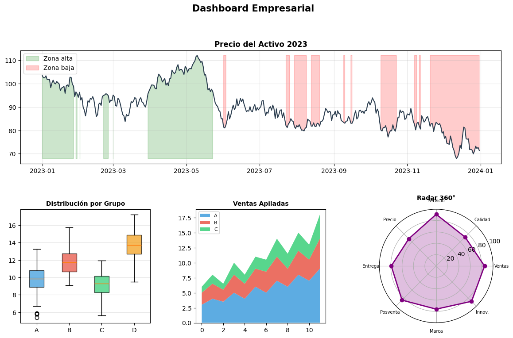
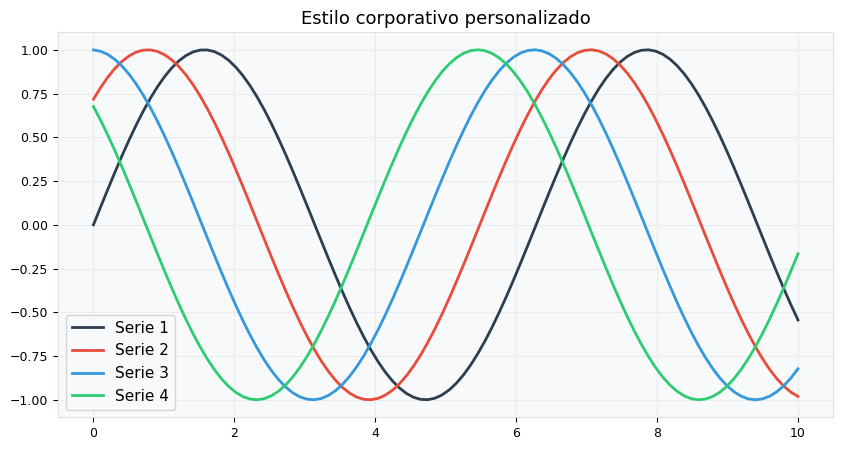
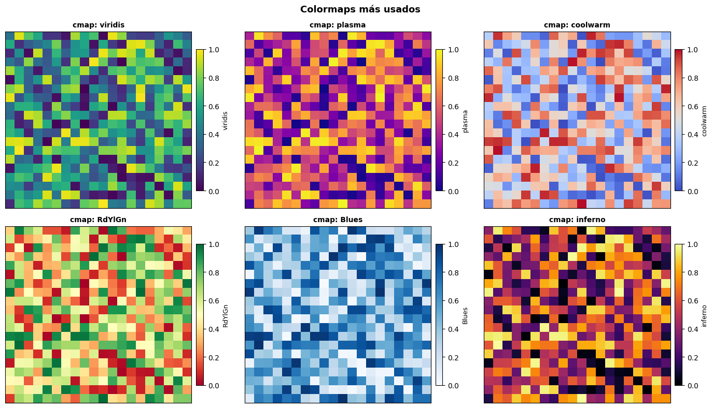
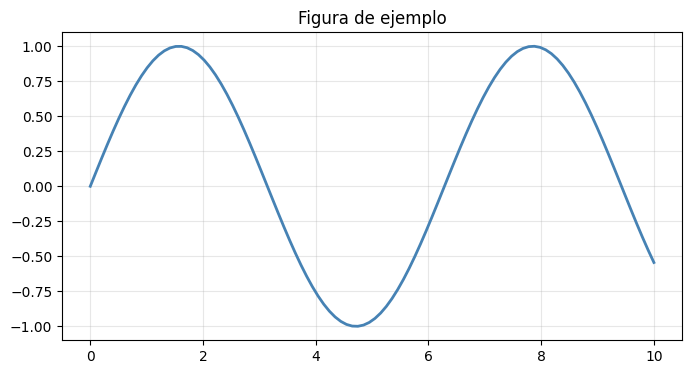

1.3.2: Matplotlib — Avanzado#
Layouts complejos, estilos, colormaps y exportación.
import matplotlib.pyplot as plt
import matplotlib.gridspec as gridspec
# gridspec → módulo para layouts de cuadrícula AVANZADOS
# Permite subplots de distintos tamaños
import numpy as np
import pandas as pd
2.1 GridSpec — layouts complejos#
np.random.seed(7)
fig = plt.figure(figsize=(14, 8))
gs = gridspec.GridSpec(
nrows=2, # 2 filas
ncols=3, # 3 columnas
figure=fig,
hspace=0.4, # espacio entre filas
wspace=0.35) # espacio entre columnas
# Axes que ocupa toda la fila superior
ax_top = fig.add_subplot(gs[0, :]) # fila 0, todas las columnas
ax_bl = fig.add_subplot(gs[1, 0]) # fila 1, columna 0
ax_bm = fig.add_subplot(gs[1, 1]) # fila 1, columna 1
ax_br = fig.add_subplot(gs[1, 2]) # fila 1, columna 2
# Serie temporal (fila superior)
fechas = pd.date_range('2023-01-01', periods=365, freq='D')
# date_range(inicio, periodos, frecuencia)
# 'D' → diario | 'M' → mensual | 'H' → horario
precio = 100 + np.cumsum(np.random.randn(365) * 2)
# np.cumsum() → suma acumulada: cada elemento = suma de todos los anteriores
# Simula un precio con variación aleatoria (random walk)
ax_top.plot(fechas, precio, color='#2C3E50', linewidth=1.5)
ax_top.fill_between(fechas, precio, precio.min(),
where=(precio > np.percentile(precio, 75)),
# where → solo rellena donde la condición es True
# percentile → valor que separa el 25% superior
color='green', alpha=0.2, label='Zona alta')
ax_top.fill_between(fechas, precio, precio.max(),
where=(precio < np.percentile(precio, 25)),
color='red', alpha=0.2, label='Zona baja')
ax_top.set_title('Precio del Activo 2023', fontweight='bold')
ax_top.legend()
ax_top.grid(True, alpha=0.3)
# Boxplot (inferior izquierdo)
datos_g = [np.random.normal(mu, 1.5, 100) for mu in [10, 12, 9, 14]]
bp = ax_bl.boxplot(datos_g, labels=['A','B','C','D'], patch_artist=True)
# patch_artist=True → rellena las cajas con color
# Un boxplot muestra: mínimo, Q1, mediana, Q3, máximo y outliers
cols_box = ['#3498DB','#E74C3C','#2ECC71','#F39C12']
for patch, color in zip(bp['boxes'], cols_box):
patch.set_facecolor(color)
patch.set_alpha(0.7)
ax_bl.set_title('Distribución por Grupo', fontweight='bold', fontsize=10)
ax_bl.grid(axis='y', alpha=0.3)
# Área apilada (inferior central)
t = np.arange(12)
pa = [3,4,3.5,5,4,6,5,7,6,8,7,9]
pb = [2,2.5,2,3,2.5,3,3.5,4,3,4,3.5,5]
pc = [1,1.5,1,2,1.5,2,2,3,2.5,3,2.5,4]
ax_bm.stackplot(t, pa, pb, pc,
labels=['A','B','C'],
colors=['#3498DB','#E74C3C','#2ECC71'],
alpha=0.8)
# stackplot → apila series, cada una sobre la anterior
ax_bm.set_title('Ventas Apiladas', fontweight='bold', fontsize=10)
ax_bm.legend(loc='upper left', fontsize=8)
# Polar (inferior derecho)
ax_br.remove()
ax_br = fig.add_subplot(gs[1, 2], projection='polar')
# projection='polar' → sistema de coordenadas polares (r, θ)
angulos = np.linspace(0, 2*np.pi, 8, endpoint=False)
vals = [85, 72, 91, 68, 79, 85, 76, 88]
ang_c = np.concatenate([angulos, [angulos[0]]])
val_c = np.concatenate([vals, [vals[0]]])
ax_br.plot(ang_c, val_c, 'o-', linewidth=2, color='purple')
ax_br.fill(ang_c, val_c, alpha=0.25, color='purple')
ax_br.set_xticks(angulos)
ax_br.set_xticklabels(['Ventas','Calidad','Servicio','Precio',
'Entrega','Posventa','Marca','Innov.'], fontsize=7)
ax_br.set_ylim(0, 100)
ax_br.set_title('Radar 360°', fontweight='bold', fontsize=10, pad=15)
plt.suptitle('Dashboard Empresarial', fontsize=15, fontweight='bold', y=1.01)
plt.tight_layout()
plt.show()
/tmp/ipykernel_740/4107082675.py:42: MatplotlibDeprecationWarning: The 'labels' parameter of boxplot() has been renamed 'tick_labels' since Matplotlib 3.9; support for the old name will be dropped in 3.11.
bp = ax_bl.boxplot(datos_g, labels=['A','B','C','D'], patch_artist=True)
/tmp/ipykernel_740/4107082675.py:84: UserWarning: This figure includes Axes that are not compatible with tight_layout, so results might be incorrect.
plt.tight_layout()

2.2 Estilos predefinidos#
2.3 rcParams — configuración global#
original = plt.rcParams.copy() # guardar para restaurar después
plt.rcParams.update({
'figure.figsize': [10, 5], # Tamaño de la figura (ancho, alto)
'figure.facecolor': 'white', # Color de fondo externo
'axes.facecolor': '#F8F9FA', # Color de fondo del área del gráfico
'axes.edgecolor': '#DEE2E6', # Color de los bordes del gráfico
'axes.grid': True, # Activar cuadrícula por defecto
'grid.color': '#E9ECEF', # Color de las líneas de la cuadrícula
'lines.linewidth': 2.0, # Grosor de todas las líneas de datos
'font.size': 11, # Tamaño de fuente general
'axes.titlesize': 13, # Tamaño del título del gráfico
'axes.labelsize': 11, # Tamaño de etiquetas X e Y
'xtick.labelsize': 9, # Tamaño de los números en el eje X
'ytick.labelsize': 9, # Tamaño de los números en el eje Y
'savefig.dpi': 150, # Resolución para guardar imágenes
'savefig.bbox': 'tight', # Ajuste automático de bordes al guardar
})
# prop_cycle → ciclo de colores que se usa automáticamente
# Cuando agregas múltiples líneas, toman colores en orden
COLORES = ['#2C3E50','#E74C3C','#3498DB','#2ECC71','#F39C12','#9B59B6']
plt.rcParams['axes.prop_cycle'] = plt.cycler(color=COLORES)
fig, ax = plt.subplots()
for i in range(4):
ax.plot(np.linspace(0,10,100), np.sin(np.linspace(0,10,100) + i*0.8),
label=f'Serie {i+1}')
# Cada línea toma automáticamente el siguiente color del cycler
ax.set_title('Estilo corporativo personalizado')
ax.legend()
plt.show()
plt.rcParams.update(original) # restaurar configuración original

2.4 Colormaps — mapas de color#
# Un colormap convierte valores numéricos en colores
# Tipos:
# Secuenciales: 'Blues','viridis','plasma' → magnitud
# Divergentes: 'RdBu','coolwarm' → valores + y -
# Cualitativos: 'Set1','tab10' → categorías
np.random.seed(42)
Z = np.random.rand(20, 20) # matriz 20x20 con valores [0, 1)
fig, axes = plt.subplots(2, 3, figsize=(14, 8))
cmaps = ['viridis','plasma','coolwarm','RdYlGn','Blues','inferno']
for ax, cmap_n in zip(axes.flatten(), cmaps):
im = ax.imshow(
Z,
cmap=cmap_n,
# imshow() → muestra una matriz como imagen
# Cada celda es un pixel coloreado según su valor
interpolation='nearest', # 'nearest'=cuadros | 'bilinear'=suave
vmin=0, vmax=1, # rango fijo del colormap
aspect='auto') # 'auto'=rellena el espacio
cbar = plt.colorbar(
im, ax=ax, shrink=0.8, pad=0.02)
# colorbar() → barra que muestra la escala de colores
# shrink=0.8 → 80% del alto del Axes
cbar.set_label(cmap_n, fontsize=9)
ax.set_title(f'cmap: {cmap_n}', fontsize=10, fontweight='bold')
ax.set_xticks([])
ax.set_yticks([])
# set_xticks([]) → elimina marcas del eje
plt.suptitle('Colormaps más usados', fontsize=13, fontweight='bold')
plt.tight_layout()
plt.show()

2.5 Guardar figuras#
fig, ax = plt.subplots(figsize=(8, 4))
ax.plot(np.linspace(0,10,100), np.sin(np.linspace(0,10,100)),
color='steelblue', linewidth=2)
ax.set_title('Figura de ejemplo')
ax.grid(True, alpha=0.3)
# PNG — mapa de bits, ideal para web
fig.savefig(
'grafico.png',
dpi=150, # resolución: 72=pantalla | 150=media | 300=impresión
bbox_inches='tight', # recorta espacio vacío alrededor
facecolor='white', # color de fondo
transparent=False) # True=fondo transparente
# SVG — vectorial, ideal para publicaciones
fig.savefig('grafico.svg', bbox_inches='tight')
# PDF — vectorial, ideal para documentos científicos
fig.savefig('grafico.pdf', bbox_inches='tight')
# En memoria (para APIs web, correos, etc.)
from io import BytesIO
buffer = BytesIO()
fig.savefig(buffer, format='png', dpi=100, bbox_inches='tight')
buffer.seek(0) # volver al inicio del buffer
datos_png = buffer.read()
print(f'PNG guardado: {len(datos_png):,} bytes')
plt.show()
PNG guardado: 31,459 bytes
